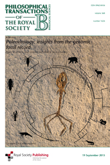

Society of Systematic Biologists
Home of Systematic Biology
Popular contentSyndicateCategories
User loginNavigationWho's onlineThere are currently 0 users and 4 guests online.
|
phyloseminar #33: Daniel Ksepka, NESCentDaniel Ksepka, NESCent Program Officer for Advances in Digitization of Biological Collections (ADBC)The Directorate for Biological Sciences at the National Science Foundation is advertising for a program officer position to manage the program “Advances in Digitization of Biological Collections (ADBC)”. For information about the scope of the program, visit the program web site. The ADBC program began in 2010 as a result of the community strategic plan for a National Integrated Biocollections Alliance (NIBA). The program supports some of the NIBA goals, specifically increasing access to the wealth of information contained in vouchered biological specimens and associated metadata through digitization and providing a central resource for access to the data (iDigBio). For information about the NIBA strategic plan and implementation plan, see here where the links to community efforts are provided. For information about the goals and activities of iDigBio, see www.iDigBio.org. Insect evolutionary genomics position at University of California, Riverside
Questions regarding this position should be directed to Professor J. Daniel Hare, Chair of the Insect Evolutionary Genomics Search Committee at daniel.hare@ucr.edu. Review of applications will begin January 3, 2014, but this position will remain open until filled. Information about the Entomology Department and an expanded description can be found on the website: http://www.entomology.ucr.edu. Mathematical and Computational Evolutionary Biology 2014
How can SSB better serve the systematics community?Hello SSB members, We would like to hear your opinions on these issues. Please take 10-15 minutes to complete the following survey about the role of the Systematic Biology journal and the Society of Systematic Biologists: https://docs.google.com/forms/d/1xHtdp0Ay_XL9-nLRWpxnszLuFQUyPyfUcq8Jb1m4QSU/viewform Paleovirology: Insights from the genomic fossil recordRoyal Society Publishing has just published Paleovirology: Insights from the genomic fossil record, compiled and edited by Aris Katzourakis. A Framework for Post-Phylogenetic SystematicsA Framework for Post-Phylogenetic Systematics, by R. H. Zander, is now available on Amazon. From the back cover: The Framework reframes biological systematics to reconcile classical and cladistic schools. It combines scientific intuition and statistical inference in a new form of total evidence analysis developing a joint macroevolutionary process-based causal theory. Discrepancies between classical results and morphological and molecular cladograms are explained through heterophyletic inference of deep ancestral taxa, coarse priors leading to Bayesian Solution of total evidence, self-nesting ladders that can reverse branching order, and a superoptimization protocol that aids in distinguishing pseudoextinction from budding evolution. It determines direction of transformative evolution through Dollo evaluation at the taxon level. The genus as a basic, practical unit of evolution is postulated for taxa with dissilient evolution. SUNY PostDoc in phenomics-based phylogeneticsCampus Description: Stony Brook University has established itself as one of America's most dynamic public universities, a center of academic excellence and a leader in health education, patient care and research. Listed among the top 1 percent of all universities in the world by Times Higher Education World University Rankings, Stony Brook is home to more than 24,000 undergraduate, graduate and doctoral students and more than 13,500 faculty and staff, including those employed at Stony Brook Medicine, Long Island's premier academic medical center and teaching hospital. With 597 beds, Stony Brook Hospital is the region's only tertiary care center and Regional Trauma Center. The University is a member of the prestigious Association of American Universities and co-manager of nearby Brookhaven National Laboratory.
SSB sponsors phyloseminar
SSB annual meetings minutes and reports 2013Reports from the Annual Meeting at Snowbird, Utah, 2013 |
 Follow us on Twitter
Follow us on Twitter Find us on Facebook
Find us on Facebook
 The 2014 meeting will take place at Hameau de l'Etoile, in the Montpellier region (France), June 15-19. This year a special focus will be given to the applications of mathematical and computational evolutionary biology to the study of biodiversity in all its aspects: from its conservation to its ecology and evolution, from the diversity within a genome, to that between individuals within a species and that between species in an ecosystem. The number of attendees will be limited (~60), so as to favor small group interaction. See
The 2014 meeting will take place at Hameau de l'Etoile, in the Montpellier region (France), June 15-19. This year a special focus will be given to the applications of mathematical and computational evolutionary biology to the study of biodiversity in all its aspects: from its conservation to its ecology and evolution, from the diversity within a genome, to that between individuals within a species and that between species in an ecosystem. The number of attendees will be limited (~60), so as to favor small group interaction. See